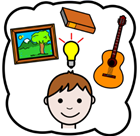
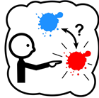
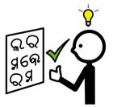
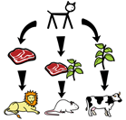
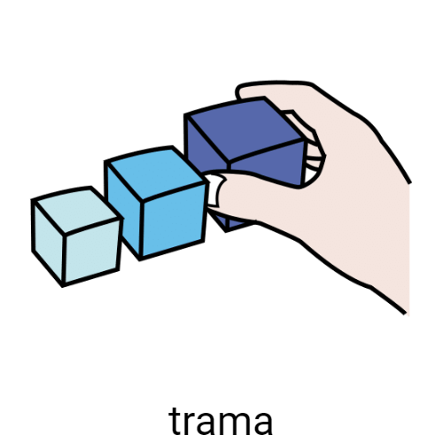

Diccionario
Creatividad

Definición:
Facilidad para crear o inventar algo.
Ejemplo:
María muestra mucha creatividad en sus dibujos.
Curioso
Definición:
Persona a la que le gusta saber cosas.
Ejemplo:
Soy muy curioso, me gusta que me lo cuenten todo.
Elección

Definición:
Selección de una cosa, persona… entre varias.
Ejemplo:
Su elección fue los cuentos de aventuras.
Encadenado
Definición:
Atado a algo o alguien con una cadena.
Ejemplo:
El tigre encadenado intenta escapar.Interpretar

Definición:
Dar un significado a algo.
Ejemplo:
Cada niña interpretó el dibujo de manera diferente.Mapa conceptual

Definición:
Conjunto de palabras y dibujos más importantes sobre un tema.
Ejemplo:
Haz un mapa conceptual.
Público
Definición:
Personas a las que va dirigido un cuento, una obra o película.
Ejemplo:
Esta película es para todos los públicos.
Trama

Definición:
Es el orden cronológico de los acontecimientos o partes de un cuento, un relato o una historia.
Ejemplo:
La trama de la película me pareció bastante rara, empezaba por el final.